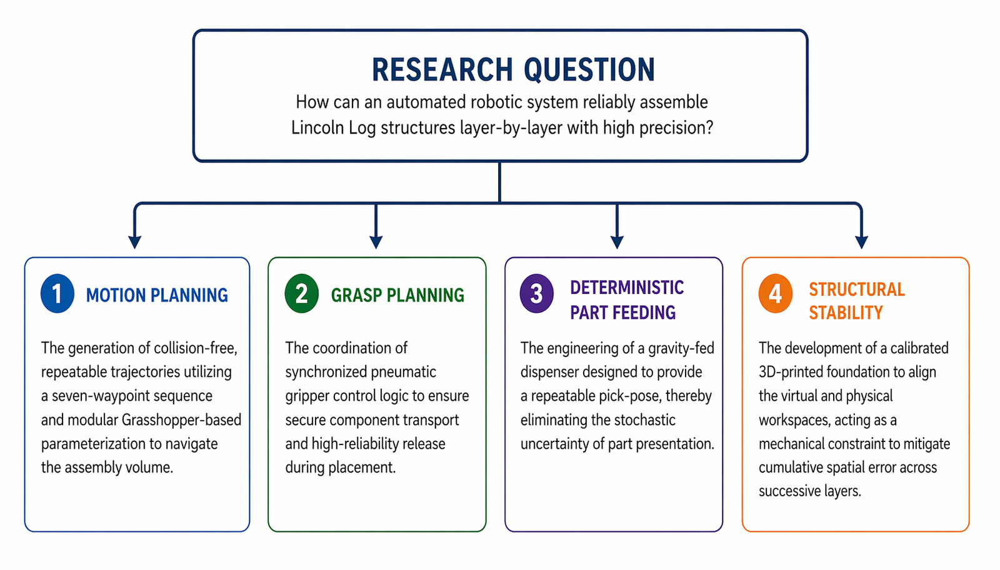
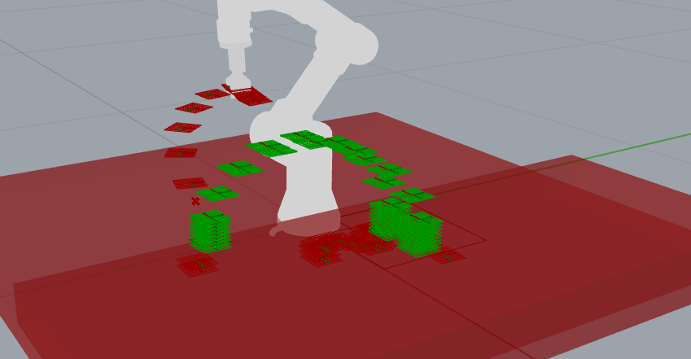
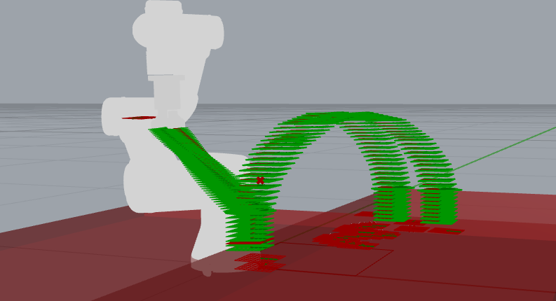
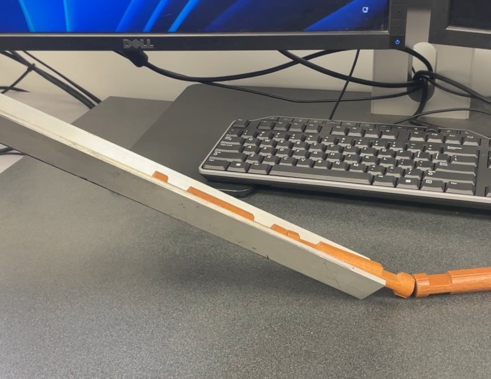
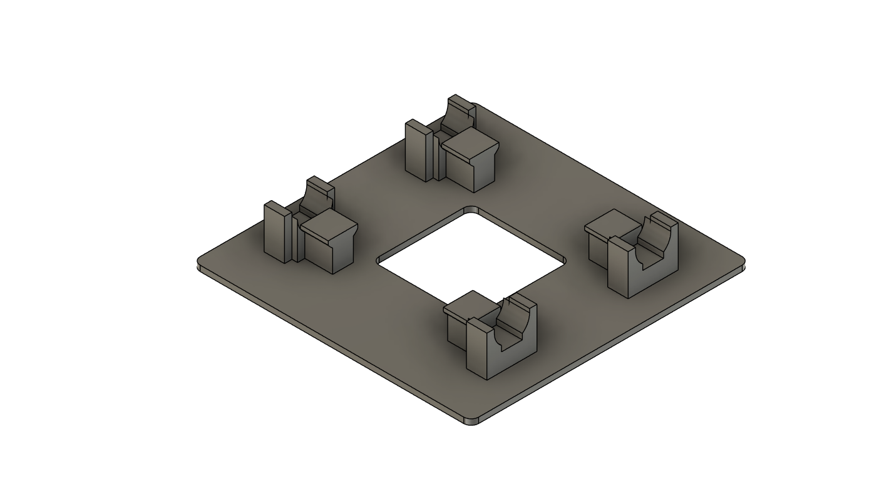
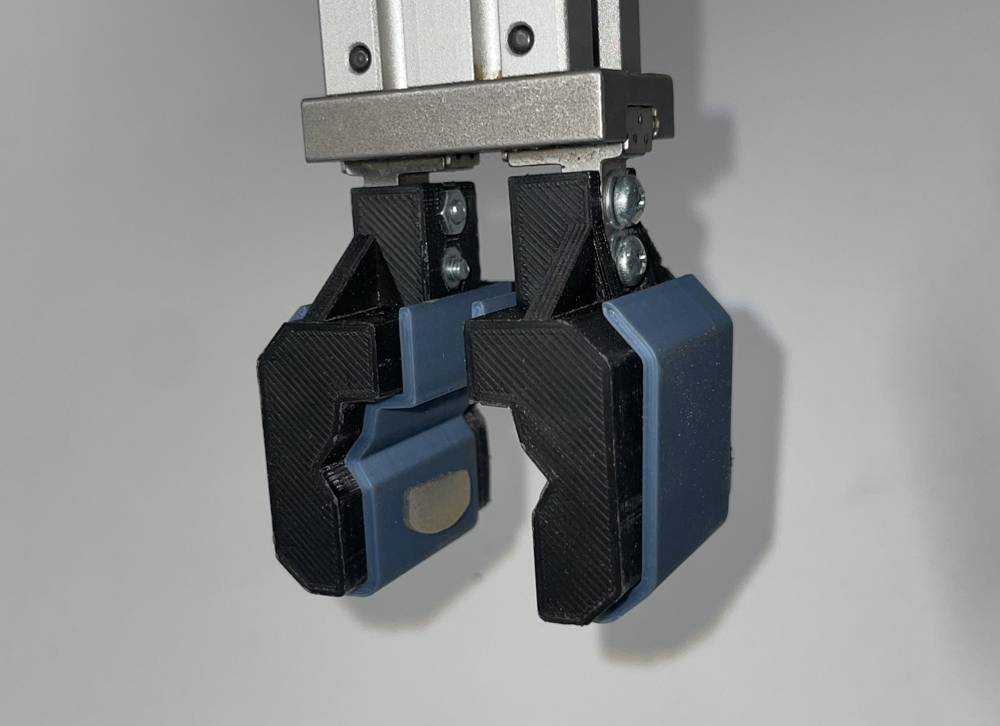
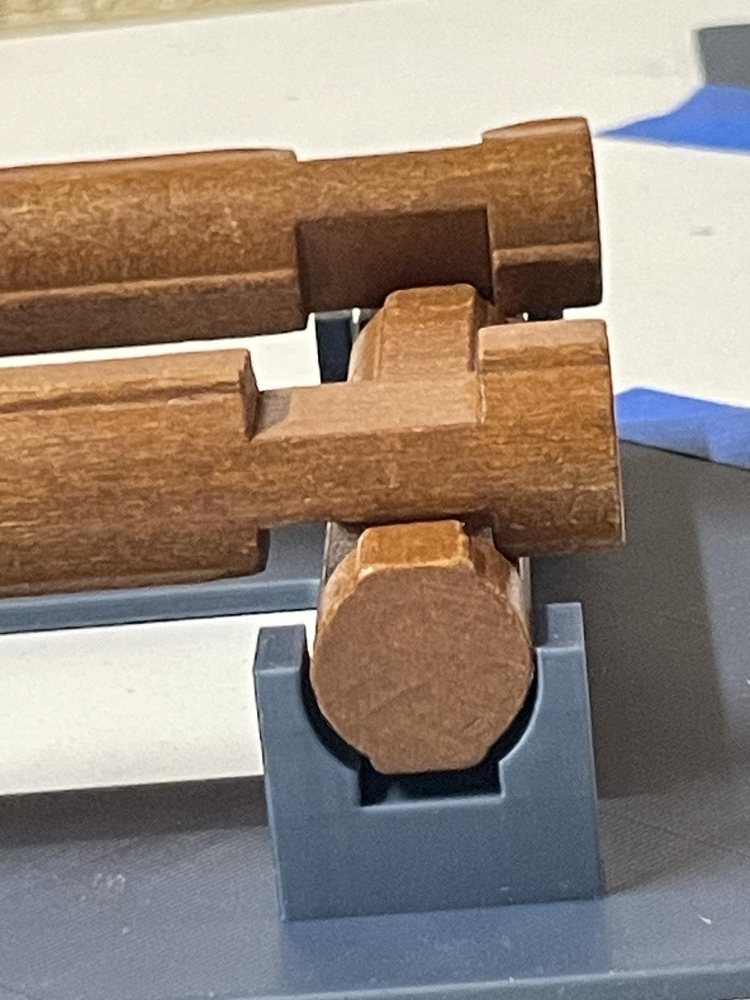

Abstract
This senior thesis develops and validates an autonomous robotic assembly system that constructs multi-layer Lincoln Log structures using a UR3 collaborative robotic arm. The system integrates four subsystems into a single end-to-end pipeline: a parametric toolpath generator built in Grasshopper, a Cartesian motion planner running on COMPAS FAB and ROS, an execution controller that synchronizes joint motion with pneumatic gripper commands, and a set of custom 3D-printed mechanical fixtures (a gravity-fed dispenser, a calibrated structural base, and gripper covers) that constrain the assembly environment in place of runtime sensing.
The completed system was validated across single-layer, two-layer, and three-layer builds, with five trials at each configuration. Single-layer assembly succeeded on every trial. Two- and three-layer assembly succeeded the majority of the time, with observed failures traced to two distinct root causes: a physical offset between the gripper cover centerline and finger contact point on odd layers, and an RPC proxy connection-pool exhaustion at the sixth log placement on the three-layer configuration. Both failure modes were diagnosed, characterized, and either resolved or documented as future work.
Motivation
The original goal of this research was human-robot collaborative assembly in a construction context: a system in which a human and a robot would jointly build a structure, sharing the workspace and coordinating their actions. Before that collaboration becomes meaningful, the robot has to be able to reliably perform its half of the task on its own. This thesis addresses that prerequisite. It develops the autonomous-robot half of the eventual human-robot system, leaving the collaboration layer to follow once the autonomous foundation is solid.
A second decision shapes the rest of the work: the system uses no cameras, force sensors, or runtime feedback. This is not a rejection of perception in principle. It is a practical choice. Lincoln Logs are dimensionally uniform, and the assembly workspace is small and fully controllable. Under those conditions, constraining the environment with precise mechanical fixtures and precomputed trajectories produces consistent, accurate results without the computational overhead of real-time sensing and adaptive control. The thesis treats this as a hypothesis to test: how well does a fully deterministic, perception-free pipeline perform when the environment has been deliberately engineered to support it, and where do its limits show up?
Lincoln Logs were selected as the assembly task for three reasons. Their uniform geometry isolates system-level challenges (calibration, fixturing, gripper synchronization) from material variability. Their interlocking, alternating-layer construction forces the system to confront cumulative-error problems that single-component pick-and-place benchmarks do not capture. And their visual recognizability makes the task legible to non-technical audiences, which matters for communicating results across the engineering and architecture communities that this research draws from.
Research Question Decomposition

System Overview
The system is structured as four cooperating subsystems. A parametric toolpath generator takes a small set of geometric inputs (a pick plane, an initial placement plane, a layer count, and a trajectory resolution) and produces the end-effector frames required for every log placement in the structure. A Cartesian motion planner converts those frames into collision-aware joint trajectories using COMPAS FAB and MoveIt!. An execution controller dispatches those trajectories to the UR3 over a persistent RPC connection while interleaving pneumatic gripper commands at precise segment boundaries. Finally, the physical hardware (the dispenser, the calibrated base, and the gripper covers) does the work that runtime sensing would normally do: presenting each log at a known pose, anchoring the assembly workspace to a fixed reference, and matching the gripper's grasp envelope to log diameter.
Every log placement follows the same seven-waypoint trajectory. The arm starts at a rest pose, descends vertically to the pick plane, retracts vertically, traverses an arc over the structure, descends vertically to the placement plane, retracts vertically, and returns to rest. The vertical descent and retraction segments exist to guarantee that the gripper enters and exits each interaction point along the z-axis, which is necessary for both reliable pickup from the dispenser and clean release at the placement notch.
Pick-and-Place Cycle in Operation
Software Architecture
The software is organized as three independent components in the Grasshopper visual programming environment, each implemented as a custom GhPython script. The components communicate through Grasshopper's native DataTree structure, which serves as the shared data format between geometry generation, motion planning, and execution. This separation makes each component independently testable and replaceable, an important property given how much each one changed during development.
Parametric Toolpath Generator
The toolpath generator accepts five inputs (a pick plane, an initial placement plane, a layer count, a starting layer index, and a trajectory resolution) and computes the end-effector pose at every waypoint for every log placement in the structure. It handles alternating 90° layer orientations, computes NURBS arc trajectories that clear previously placed logs, and enforces strictly vertical approach and departure at the pick and placement planes. All geometric parameters (the 76.3 mm log-axis spacing, the 18 mm layer height, the X and Y correction offsets applied to odd layers) are derived from direct measurements of Lincoln Log piece geometry and are parameterized at the top of the script so they can be tuned without rewriting any downstream logic.
The generator outputs a hierarchical DataTree indexed by log number and trajectory segment. Indexing the trees this way (rather than as a flat list of poses) makes downstream motion planning and gripper command dispatch straightforward: each segment maps directly to a planning call, and gripper events attach naturally to segment boundaries.
Generated Waypoints and Planned Trajectory


Cartesian Motion Planner
The motion planner is a GhPython component that iterates over the DataTree of waypoints and
calls COMPAS FAB's plan_cartesian_motion for each of the four trajectory
segments per log (rest-to-pick, pick-to-align, align-to-place, place-to-rest). Cartesian
planning was chosen over joint-space planning because the task requires the gripper to
follow a controlled arc over previously placed logs; joint-space planning produces
trajectories that satisfy start and end poses but give no guarantee on the path between them.
The output is a set of joint-space trajectories suitable for direct execution on the UR3,
with collision checking handled by MoveIt! against the Rhino-defined workspace geometry.
Every planned trajectory is visualized in Rhino before any physical run, which made it
possible to catch a number of issues (inverted z-axes, missed waypoints, geometry-violating
paths) before sending any commands to the robot.
Execution Controller
The execution controller dispatches the planned joint trajectories to the physical UR3 and interleaves pneumatic gripper commands at precise segment boundaries. The gripper closes at the end of the rest-to-pick segment, after the arm has completed its vertical descent to the dispenser pickup location, and opens at the end of the align-to-place segment, after the arm has completed its vertical descent to the placement notch. Each gripper actuation is followed by an empirically determined 500 ms dwell to allow the pneumatic system to fully open or close before the next motion segment begins. Communication with the UR3 runs over COMPAS FAB's RPC proxy, which is instantiated once at the start of the build and reused for every subsequent command (a change made after diagnosing connection-pool exhaustion in an earlier version that instantiated a new proxy for every gripper actuation).
Mechanical Design
The mechanical hardware does the work that runtime sensing would otherwise have to do. Three custom-fabricated components define the physical environment: a gravity-fed dispenser that presents each log at a fixed pose, a 3D-printed structural base that constrains the first layer to a known position, and a pair of gripper covers that adapt the off-the-shelf pneumatic gripper to Lincoln Log diameter. All three were modeled in Fusion 360 and Rhino and 3D-printed in PLA on a Bambu Labs X1 Carbon.
Gravity-Fed Log Dispenser
The dispenser is the part of the system that most directly substitutes for visual sensing: it guarantees that every log presented to the gripper is in the same location and orientation, so the robot does not need to find or recognize the log. The final design is a compound-angle channel inclined at 15° that holds a stack of logs against a stop at the bottom of the slope. When the gripper picks the bottom log, the next log slides into place under gravity, ready for the next pick. The presentation pose is repeatable to within the manufacturing tolerance of the channel itself.
The dispenser went through one significant design pivot. The first concept was a spring-raised magazine: a vertical column with a spring-loaded base that pushed the stack upward, presenting the top log to the gripper. A spring constant analysis showed that supporting a stack of even a dozen logs would require either an impractically long spring travel (more than the available vertical clearance under the robot) or a parallel arrangement of twelve or more springs to keep the lift force within the working range across the full stack. The gravity-fed design eliminates the spring entirely and achieves the same repeatable presentation pose using only the geometry of the channel and the angle of inclination.
Final Dispenser Design

Structural Base
The base is a flat 3D-printed PLA plate with four molded slots that capture the ends of the first-layer logs. The slot center-to-center spacing is 76.3 mm, which is the notch-to-notch distance on the Lincoln Log pieces used in this thesis. This precise spacing is what allows the system to bypass first-layer calibration: once the base is positioned on the work surface and the robot's pick and placement planes are registered against it, every subsequent log placement uses the base as a fixed spatial reference. The base also acts as a session-to-session calibration aid; the robot is taught the base position in free-drive mode at the start of each session and the rest of the workspace is derived from it.
The first version of the base failed for two reasons that surfaced during physical testing. First, the 76.3 mm dimension had been applied to the inner faces of the slot walls rather than to the slot centerlines, putting the slots too far apart by roughly one slot-wall thickness. The error was visible in the resulting build (the first layer sat with audible gaps at the joints) but not obvious in the CAD model until the dimensions were re-checked against axial centerlines. Second, the log supports were tall enough to interfere with the gripper as it descended to place each log. Because the gripper holds every log by its cylindrical sides, the fingers themselves need to travel below the top of the support walls during placement, and the v1 walls were too tall for that clearance. The v2 base fixes both problems: the slots are placed on accurate 76.3 mm centerlines, and the support walls are lowered enough to give the gripper fingers vertical clearance during every placement.
Final Structural Base Design

Pneumatic Gripper System
The gripper is a spring-return parallel pneumatic gripper actuated by two solenoid valves wired to the UR3's 24V digital I/O outputs. The two-solenoid configuration provides positive control over both the open and closed states; a single-solenoid arrangement would rely on spring force alone for one direction and would not respond to commands at the same rate in both directions.
Off the shelf, the gripper's closed inter-finger gap was wider than the Lincoln Log diameter, which meant that closing the gripper on a log produced an unreliable friction grip rather than a positive-stop grasp. The solution was a pair of custom 3D-printed covers (2 mm wall thickness, PLA) that slide onto the gripper's pads and bring the closed gap down to log diameter. Repurposed eyeglass nose pads, which have adhesive on one side, attach to the inside face of each cover to provide anti-slip compliance against the log surface. The covers install without modifying the gripper itself, which made them easy to iterate during testing.
Gripper with Custom Covers

Iterative Development
The system was built in four development phases. Each phase added a capability the previous one lacked, and each was driven by a specific limitation observed in physical testing rather than by a predetermined plan. The phases are summarized below, with a representative case study from each described in more detail after.
Arc-Path Generator
Initial single-arc trajectory from pick to place. Failed because the arc's tangent at the endpoints was not vertical, making it incompatible with the dispenser's required straight-down pickup.
Seven-Waypoint Executor
Introduced rest and align planes to guarantee vertical descent and retraction. Diagnosed
and corrected an inverted z-axis on the placement plane using plane.Flip().
Gripper-Integrated Calibrated System
Split the pick-to-place segment into two segments so the gripper opens at the placement notch rather than 50 mm above it. Corrected a 9 mm TCP coordinate frame offset between the controller and the trajectory generator.
Persistent Multi-Layer System
Added X_ADJUST and Y_ADJUST correction terms to compensate for
the gripper-cover centerline offset on odd layers. Refactored the RPC proxy to a single
persistent instance.
Final Four-Segment Trajectory Architecture
Case Study: Splitting the Trajectory at the Align Plane
In the Phase 2 architecture, each log placement consisted of three trajectory segments (rest-to-pick, pick-to-place, place-to-rest) with the align plane treated as an interior waypoint of the pick-to-place segment. In testing, this produced a repeatable failure: the gripper opened too early, releasing the log roughly 50 mm above the placement notch rather than seating it into the notch. The log fell, the orientation drifted, and the placement was never reliable.
The cause was the way the execution controller dispatched gripper commands. The gripper-open command was attached to the end of the pick-to-place segment, but in practice the controller fired it when the arm reached the align waypoint embedded inside that segment, not when the segment fully completed. The fix was to split pick-to-place into two independent segments (pick-to-align and align-to-place) and to attach the gripper-open command to the end of the align-to-place segment. This made the gripper release contingent on completion of an explicit vertical-descent segment, which the controller dispatched correctly. The four-segment-per-log architecture from Phase 2 onward is the direct result of this fix.
Case Study: Odd-Layer Translation and Rotation Correction
The first two-layer trials produced a clear pattern: even-layer logs (layers 0 and 2) were placed reliably, but odd-layer logs (layer 1) were placed with a combined translation and rotation offset relative to the structure. The misalignment was consistent across trials, which pointed to a systematic cause rather than random gripper variation.
The root cause was a physical offset between the geometric center of the gripper covers and
the contact line of the underlying gripper fingers. When the arm rotated 90° between even
and odd layers, this offset rotated with it, shifting the effective pick point by a few
millimeters in both X and Y. The correction was two scalar adjustment terms
(X_ADJUST and Y_ADJUST) applied to the odd-layer placement plane
translations. Once these were tuned, the odd-layer placements moved into nominal alignment
and the two-layer success rate improved substantially. The same correction strategy carries
forward to three-layer builds, where it continues to work cleanly.
Testing and Results
The completed system was validated across three assembly configurations (single-layer, two-layer, and three-layer) with five trials at each configuration. Each trial was recorded with per-log outcome codes that capture the placement status of every log (correctly placed, incorrectly placed, dropped during transit, or dispatch failed). Pick success and placement success are reported separately because they fail for different reasons and respond to different fixes.
Single-Layer · 2 Logs
100%
All five trials placed correctly. Confirms the calibration fixes from Phase 3 and establishes the operational baseline.
Two-Layer · 4 Logs
~75%
Failures concentrated on the first odd-layer log. Diagnosed as gripper-cover centerline offset and corrected mid-experiment with the X and Y adjustment terms.
Three-Layer · 6 Logs
~83%
First five logs placed correctly on every trial; execution froze before the sixth log. Diagnosed as RPC proxy connection-pool exhaustion.
Pick success was 100% across all three configurations. Every observed failure was a placement failure, not a pick failure, which validates the dispenser design: the deterministic part-feeding subsystem worked exactly as intended on every log of every trial.
Every placement failure exhibited combined rotational and translational (R+T) misalignment. The same gripper-opening dynamics that introduced lateral force on release also introduced torque, so the two failure modes are not independent. Reporting placement outcomes with a single scalar deviation would have missed this coupling; the per-log outcome-code scheme used here captures both rotation and translation directly.
R+T Misalignment at the Notch

The headline finding of the testing program is that deterministic, perception-free assembly is highly reliable within a bounded operational envelope, and that its failure modes are systematic rather than random. Once a placement is even slightly off, subsequent placements on top of it inherit that offset with no mechanism to correct, and the cumulative error sets a ceiling on how many layers can be built before failure becomes likely. The thesis treats this as a characterization of the operational envelope of the approach, not as a verdict on it: the approach is appropriate for small, controlled assemblies and would need to be paired with sensing or compliance for larger ones.
Future Work
Four extensions of this thesis follow directly from the limits identified during testing.
State-based execution synchronization. The current controller uses
empirically tuned time.sleep() dwells between motion segments and gripper
actuations. Replacing these with completion-confirmation queries from the robot controller
and pneumatic system would eliminate timing-parameter sensitivity, reduce overall cycle time,
and remove an entire category of failure modes that appear as the system is moved between
work surfaces or pneumatic supplies.
Force-torque sensing for compliant placement. The most direct remedy for the R+T failure mode is compliant insertion. A force-torque sensor at the wrist would let the robot detect contact, correct small height deviations on contact, and recover from minor odd-layer offsets without re-calibration. This would extend the operational envelope of the system to taller structures without requiring full perception.
Generalization to multi-notch Lincoln Log pieces. The current system is restricted to the two-notch log pieces used throughout this thesis. The toolpath generator and trajectory planner make several assumptions that depend on this restriction (uniform piece length, fixed notch spacing, identical orientation options). Extending the parametric generator to handle the full set of Lincoln Log piece types (longer logs, shorter logs, gables, roof pieces, doors, windows) would let the system build a wider range of structures, including the canonical log cabin shape with a peaked roof. This is the most natural next step from the current point: the planning and execution stack does not need to change, only the geometric input layer.
Human-robot collaboration. With reliable autonomous assembly established, the original collaborative vision becomes tractable. The rest pose at the end of every trajectory is a natural yield point at which a human could take over; the parametric trajectories are already interruptible between segments. The remaining work is the safety and intent-detection layer that mediates between autonomous and collaborative modes, which is its own research problem and the most ambitious of the four extensions.